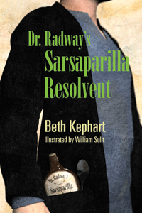

<body bgcolor="#FFFFFF" text="#000000" link="#0000FF" vlink="#CC0000" alink="#CC0000"><center><hr width="350" size="1" align="center" noshade>A young adult novel set during the height of Philadelphia's industrial age<hr width="350" size="1" align="center" noshade><p><a href="https://cdcshoppingcart.uchicago.edu/Cart/ChicagoBook.aspx?ISBN=9780984042968&&PRESS=temple" target="_top">Buy this book!</a> | <a href="https://cdcshoppingcart.uchicago.edu/Cart/Cart.aspx?PRESS=temple" target="_top">View Cart</a> | <a href="https://cdcshoppingcart.uchicago.edu/Cart/Cart.aspx?PRESS=temple" target="_top">Check Out</a></p><p></p></center><!--none//--><h1>Dr. Radway's Sarsaparilla Resolvent</h1>
<h3>Beth Kephart</h3>
<P>paper 0-9840429-6-2 $15.95, Apr 13, <FONT COLOR=#990033>Available</FONT>
<BR> 198 pp
5.5 x 8.5
</P><h3 align="center"><P><font color="#996633">Parrott Library Award from the St. Albans School Library,
2014</font></P>
<P><font color="#996633">Kirkus Reviews' Best in Children's Books,
2013</font></P>
</H3>
<BLOCKQUOTE><I>"[A] bright, burning novel-- intended for a young adult audience but powerful enough to engage any adult is set in the Philadelphia of 1870. Using surprising period details and a gorgeous turn of phrase, Kephart has called forth an interesting time in our city's history and made it live again for just a moment.... While many historical novels, especially those for younger readers, can come across as corny or costumey, this one rings true, its language seeming to have been composed during the era it describes.... These people feel real, and we have no trouble imagining them living out their dramas just as painfully and joyously as we do ours, 100 or more years before we were born."</I>
<br>&#151<b>The Philadelphia Inquirer </b><I></I></BLOCKQUOTE>
<p>Flavored by the oddities of historic personalities and facts, <I>Dr. Radway’s Sarsaparilla Resolvent</I> is set in Bush Hill, Philadelphia, 1871—home to the Baldwin Locomotive Works and a massive, gothic prison. Acclaimed writer Beth Kephart captures the rhythms and smells of an extraordinary era as William Quinn and his Ma, Essie, grapple with life among terrible accidents, miraculous escapes, and shams masquerading as truth.
<P>Distributed by Temple University Press for the New City Community Press
<BR>&nbsp;<h2>Reviews</h2>
<p><i>"Playing masterfully with words, knitting them into new and deliciously expressive forms, Kephart’s story is one of loss and then redemption.... Like the very best of historical fiction, this effort combines a timeless tale with a vividly recreated, fascinating world. An outstanding and ultimately life-affirming tale."</i>
<br>&#151<b><i>Kirkus Review</i></b>
<p><i>"One pleasure of Beth Kephart’s lively new historical Philadelphia novel is the strong fit of the writer’s project and the story she tells.... </i>Dr. Radway’s Sarsaparilla Resolvent<i> shines as a novel about grief itself, suggesting that in thinking about what we miss, we keep what’s missing alive."</i>
<br>&#151<b><i>Cleaver Magazine</i></b>
<p><i>"Bush Hill comes to life in the hands of Kephart, who clearly loves her subject, even the dark alleys and the unsavory places like Cherry Hill Penitentiary.... </i>Dr. Radway’s Sarsaparilla Resolvent<i> by Beth Kephart, illustrated by William Sulit, is splendid and will leave readers wanting even more."</i>
<br>&#151<b><i>Savvy Verse & Wit</i></b>
<p><i>"William's voice breaks through the page with ease, and readers will...share in his struggles and triumphs."</i>
<br>&#151<b><i>Bookslut</i></b> (website)
<p><i>"Kephart integrates her story of the Quinn family's hope for salvation with a celebration of the city's [Philadelphia's] rich and multifaceted history.... Though the tone of the novel is somber, the author frequently incorporates upbeat, poetic phrases to suggest that the Quinns' fate is far from hopeless.... Original news stories add an authentic touch to the book. Equally effective is the true account of the daring escape from the Eastern Penitentiary published in </i>The Public Ledger<i> on August 2, 1871.... Pair this novel with Kephart's </i>Dangerous Neighbors<i> and Laurie Halse Anderson's </i>Fever, 1793<i> for other key events about Philadelphia's intriguing past."</i>
<br>&#151<b><i>School Library Journal</i></b>
<p><i>"In this exceptionally-researched novel targeted toward the tween/young adult audience, Beth Kephart captures not only the sights and sounds of Philadelphia during this industrial age, but also the language of the time. One of her many talents as a writer is her consistent ability – in every book she writes – to put her reader in the scene alongside her characters."</i>
<br>&#151<b>Melissa Firman's blog</b>
<BR>&nbsp;<H2>About the Author(s)</H2>
<P><b>Beth Kephart</b> teaches creative nonfiction at the University of Pennsylvania. She is the award-winning author of fifteen books, including <i><a href="1909_reg.html" target="_top">Flow: The Life and Times of Philadelphia’s Schuylkill River</a></i> (Temple) and <i>Dangerous Neighbors</i>.</P>
<BR><H2>Subject Categories</H2>
<p><A HREF="/tempress/philly.html" TARGET="_top">Philadelphia Region</a>
<BR><A HREF="/tempress/literature.html" TARGET="_top">Literature and Drama</a>
<BR><A HREF="/tempress/history.html" TARGET="_top">History</a>
</p>
<p align="center"><a href="https://cdcshoppingcart.uchicago.edu/Cart/ChicagoBook.aspx?ISBN=9780984042968&&PRESS=temple" target="_top">Buy this book!</a> | <a href="https://cdcshoppingcart.uchicago.edu/Cart/Cart.aspx?PRESS=temple" target="_top">View Cart</a> | <a href="https://cdcshoppingcart.uchicago.edu/Cart/Cart.aspx?PRESS=temple" target="_top">Check Out</a></p><p><font face="Arial" size="1"><a href="copyright.html" onMouseOver="window.status='Web Copyright Policy';return true;" onMouseOut="window.status=''" title="Web Copyright Policy">&copy;</a> 2015 <a href="http://www.temple.edu" target="new" onMouseOver="window.status='Link to Temple University home page';return true;" onMouseOut="window.status=''" title="Link to Temple University home page">Temple University</a>. All Rights Reserved. http://www.temple.edu/tempress/titles/2290_reg.html</font></p>